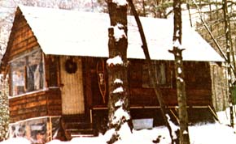

I have just two words of advice for anyone who wants to move to the country: "Do it!"
We started "doin' it" on Independence Day, July 4, 1975 ... exactly one year before some of you will read this. Armed with ten issues of MOTHER, a few books on how to build log cabins, and a truckload of determination, the five of us-Mom (49), Linda (22), Gary (17), Erika (5), and myself (30)-made our move to the woods of New Hampshire.
Upon our arrival, we set up a campsite and then planted a small, late garden. (We didn't hold high expectations for the vegetable patch-our intent was just to see if anything would grow-but we did get a harvest.) For most of the summer, we felled and dressed logs for our long-dreamt-of cabin (although I confess we took off many a hot afternoon to go swimming in one of the numerous nearby lakes).
Since we were interested in salvaging any free building supplies that we could, we quickly made it our habit to keep an eye peeled-any time we drove anywhere in our van-for old wooden structures that we could get permission to tear down and salvage. As a result, it didn't take us long to scrounge enough usable wood to build a privy and a small shed to hold our belongings.
Just as we'd laid the first row of logs for the cabin in September, however, we really hit pay dirt. A family about 25 miles away advertised that they'd gladly give their three-story barn to anyone who would tear it apart and haul it away. We hadn't the vaguest idea how we could accomplish the feat, but said we'd do it nonetheless.
And we did! Despite the fact that I have a permanently disabled right arm, and despite the fact that none of us had had any previous experience at this sort of thing (except me ... I'd worked as a carpenter's helper for six months when I was 16 years old).
We purchased a hammer and two nail pullers, borrowed a pair of wrecking bars, made a hole in the barn's roof, climbed out on top of the structure ... and worked our way down! As Gary and I tore boards from the building, the womenfolk pulled and saved nails. The way things turned out, a good 75% of the wood was salvageable ... and the rest made great kindling.
Since some beams were too unwieldy for us to haul in our van, we traded a couple of loads of kindling for the use of a pickup truck. Then-as we removed old planks and beams from the barn-we carried them right home and made them a part of our cabin (which, of course, we'd decided not to build of logs after our fantastic find).
The first step in the construction of our permanent home was the sinking of twelve creosote-treated piles into the ground-to a depth of three feet-as supporting pillars. (We didn't pour a conventional foundation.) We then built a double floor-with a layer of tar paper in the middle for insulation-on top of the stubby uprights. Next, we erected the frame of the house and covered it with both 4-mil plastic and a layer of tar paper (to keep out drafts). Then, to give the structure more rigidity before the roof went on, we put up some of the siding ... after which we finished off the building's roof and walls, in that order.
Since the boards we'd gotten from the barn were of un even lengths, we lapped each row of siding over the one below ... giving our cabin-we think-a pleasantly rustic appearance.
The work went fast and, by the third week in October, we'd razed the old barn and moved into our freshly minted cabin.
The new dwelling measures 10-1/2' X 21' and has two small sleeping lofts near the ceiling. It also sports a porch across its front, and-when we get around to it-we'll screen in the area so that we may better enjoy our beautiful summer evenings. The total cost of the lodge figured out about like this:
Aside from the above, our only other major expenses were our wood stove and stovepipe. (We went whole hog and bought a good Norwegian stove. For about ten bucks, however, you can make a perfectly satisfactory heater out of a junkyard-variety 55-gallon drum.)
As you can see, it didn't cost us a great amount of money to move to the country. Nor did we have a lot of skills to fall back on. But we did have determination. The determination to do it.
|
 |
|
|